Started
03.09.2024.14.40.26
Ended
03.09.2024.14.41.02
Features Passed
1
Features Failed
10
Features
Scenarios
Steps
Timeline
Tags
| Name | Passed | Failed | Skipped | Others | Passed % |
|---|---|---|---|---|---|
| @Scenario2 | 0 | 2 | 0 | 0 | 0% |
| @TextBox | 0 | 4 | 0 | 0 | 0% |
| @Zoho | 1 | 0 | 0 | 0 | 100% |
| @Amazon | 0 | 2 | 0 | 0 | 0% |
| @Scenario3 | 0 | 2 | 0 | 0 | 0% |
| @EproCampaignCreation | 0 | 6 | 0 | 0 | 0% |
| @Scenario1 | 0 | 2 | 0 | 0 | 0% |
| @Scenario11 | 0 | 2 | 0 | 0 | 0% |
-
Functionality of Text Box
2:40:27 pm / 00:00:14:680 Fail
Functionality of Text Box
09.03.2024 2:40:27 pm 09.03.2024 2:40:42 pm 00:00:14:680 · #test-id=1FailEntering the values in Text Box FieldFailEntering the values in Text Box FieldGiven User enter and Launches website "https://demoqa.com/"stepDefinitions.Hooks.takeScreenshot(io.cucumber.java.Scenario)imageWhen User click on elementstepDefinitions.Hooks.takeScreenshot(io.cucumber.java.Scenario)imageWhen User click on Text BoxstepDefinitions.Hooks.takeScreenshot(io.cucumber.java.Scenario)image And User enter the name name1stepDefinitions.Hooks.takeScreenshot(io.cucumber.java.Scenario)image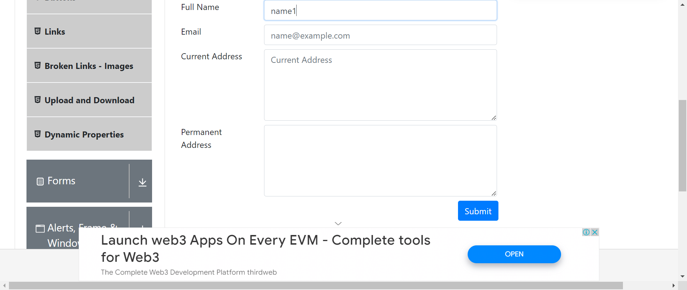And User enter the mail name1@gmail.comstepDefinitions.Hooks.takeScreenshot(io.cucumber.java.Scenario)imageAnd User enter the current address successstepDefinitions.Hooks.takeScreenshot(io.cucumber.java.Scenario)image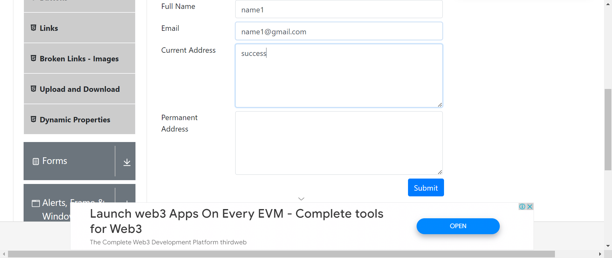And User enter the Permanent address successstepDefinitions.Hooks.takeScreenshot(io.cucumber.java.Scenario)image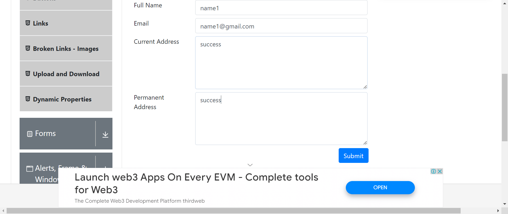stepDefinitions.DemoQATextBoxStepDefinition.addScreenshot(io.cucumber.java.Scenario)And User click on submitStep skippedThen User will visible enter detailsStep skippedstepDefinitions.Hooks.teardown()FailEntering the values in Text Box FieldGiven User enter and Launches website "https://demoqa.com/"stepDefinitions.Hooks.takeScreenshot(io.cucumber.java.Scenario)imageWhen User click on elementstepDefinitions.Hooks.takeScreenshot(io.cucumber.java.Scenario)image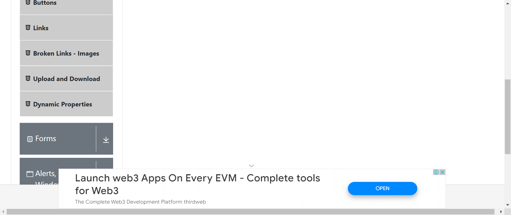When User click on Text BoxstepDefinitions.Hooks.takeScreenshot(io.cucumber.java.Scenario)image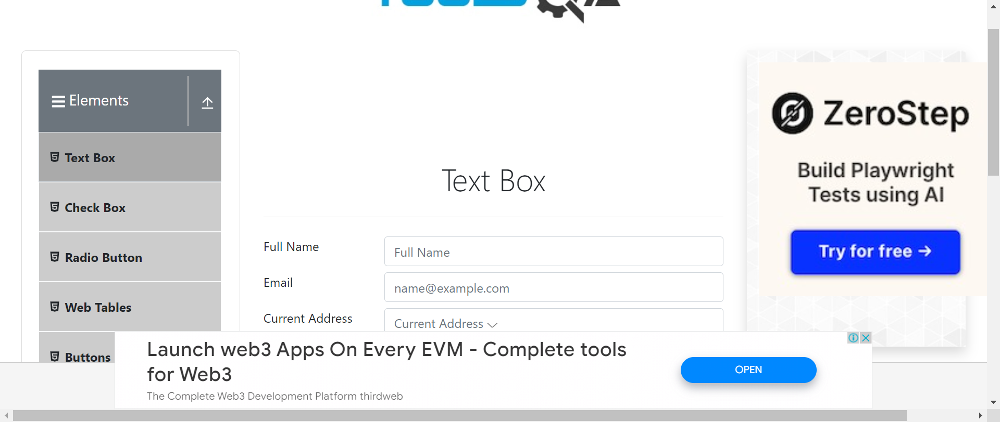And User enter the name name2stepDefinitions.Hooks.takeScreenshot(io.cucumber.java.Scenario)imageAnd User enter the mail name2@gmail.comstepDefinitions.Hooks.takeScreenshot(io.cucumber.java.Scenario)imageAnd User enter the current address failstepDefinitions.Hooks.takeScreenshot(io.cucumber.java.Scenario)image
And User enter the name name1stepDefinitions.Hooks.takeScreenshot(io.cucumber.java.Scenario)image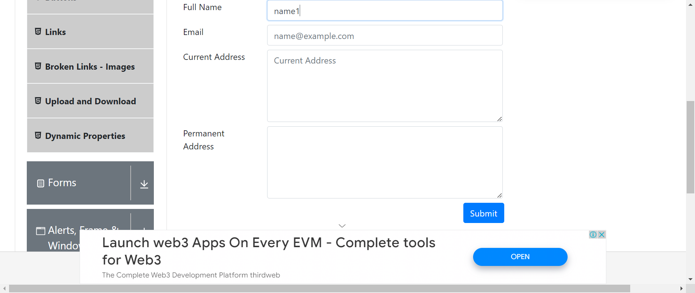And User enter the mail name1@gmail.comstepDefinitions.Hooks.takeScreenshot(io.cucumber.java.Scenario)imageAnd User enter the current address successstepDefinitions.Hooks.takeScreenshot(io.cucumber.java.Scenario)image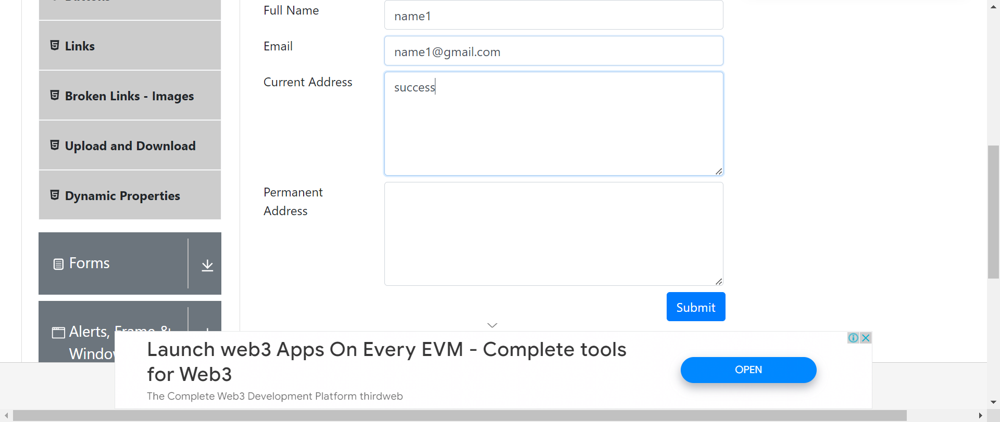And User enter the Permanent address successstepDefinitions.Hooks.takeScreenshot(io.cucumber.java.Scenario)image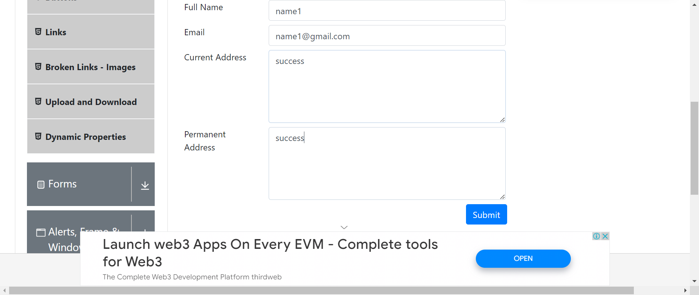stepDefinitions.DemoQATextBoxStepDefinition.addScreenshot(io.cucumber.java.Scenario)And User click on submitStep skippedThen User will visible enter detailsStep skippedstepDefinitions.Hooks.teardown()FailEntering the values in Text Box FieldGiven User enter and Launches website "https://demoqa.com/"stepDefinitions.Hooks.takeScreenshot(io.cucumber.java.Scenario)imageWhen User click on elementstepDefinitions.Hooks.takeScreenshot(io.cucumber.java.Scenario)image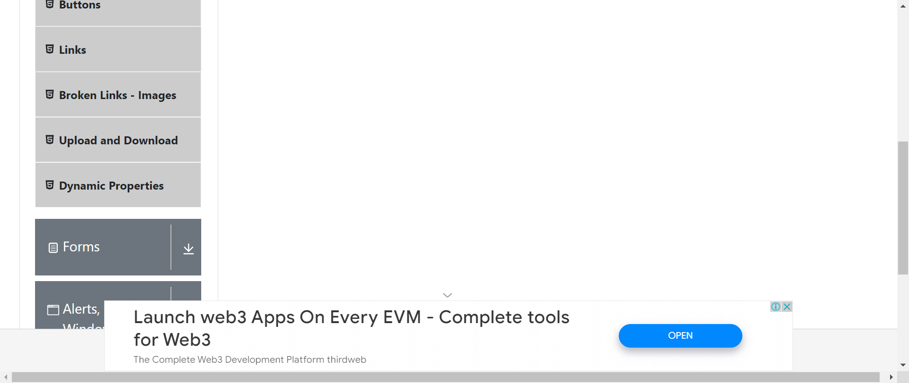When User click on Text BoxstepDefinitions.Hooks.takeScreenshot(io.cucumber.java.Scenario)image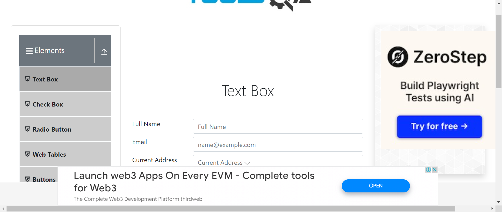And User enter the name name2stepDefinitions.Hooks.takeScreenshot(io.cucumber.java.Scenario)imageAnd User enter the mail name2@gmail.comstepDefinitions.Hooks.takeScreenshot(io.cucumber.java.Scenario)imageAnd User enter the current address failstepDefinitions.Hooks.takeScreenshot(io.cucumber.java.Scenario)image And User enter the Permanent address failstepDefinitions.Hooks.takeScreenshot(io.cucumber.java.Scenario)image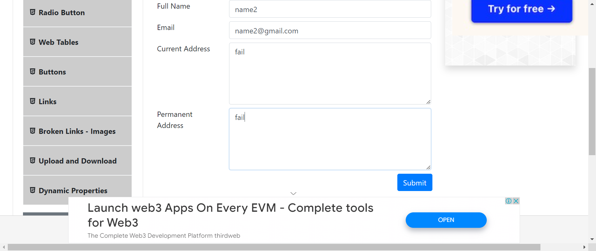And User click on submitstepDefinitions.DemoQATextBoxStepDefinition.addScreenshot(io.cucumber.java.Scenario)Then User will visible enter detailsStep skippedstepDefinitions.Hooks.teardown()
And User enter the Permanent address failstepDefinitions.Hooks.takeScreenshot(io.cucumber.java.Scenario)image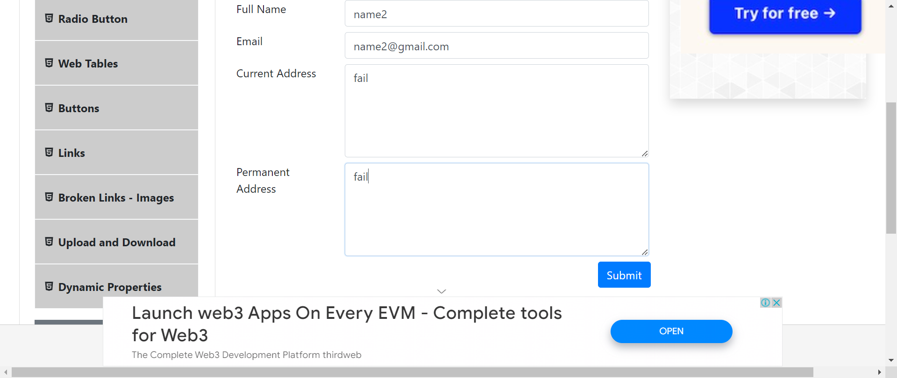And User click on submitstepDefinitions.DemoQATextBoxStepDefinition.addScreenshot(io.cucumber.java.Scenario)Then User will visible enter detailsStep skippedstepDefinitions.Hooks.teardown() -
Create a campaign
2:40:27 pm / 00:00:16:219 Fail
Create a campaign
09.03.2024 2:40:27 pm 09.03.2024 2:40:43 pm 00:00:16:219 · #test-id=5FailValidate Draft and Final Invoice GenerationFailValidate Draft and Final Invoice GenerationGiven User launches Epro url and login with valid Staginguser_2 and Password@123456stepDefinitions.Hooks.takeScreenshot(io.cucumber.java.Scenario)image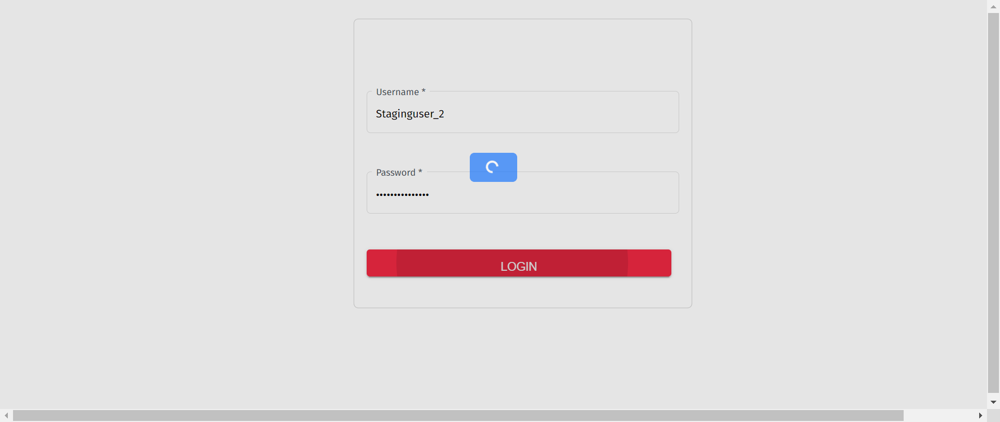And User get the Campaign id for PO Receipted and navigate to Sales Order pagestepDefinitions.DemoQATextBoxStepDefinition.addScreenshot(io.cucumber.java.Scenario)Then User will Create Draft InvoiceStep skippedAnd Click on Finance and navigate to Sales InvoiceStep skippedAnd Click on resepctive Invoice number (Manage Invoice)Step skippedThen User will send Final Invoice to customerStep skippedstepDefinitions.Hooks.teardown() -
Create a campaign
2:40:27 pm / 00:00:16:545 Fail
Create a campaign
09.03.2024 2:40:27 pm 09.03.2024 2:40:44 pm 00:00:16:545 · #test-id=8FailValidate Create Campaign and Assign SupplierFailValidate Create Campaign and Assign SupplierGiven User launches Epro url and login with valid Staginguser_2 and Password@123456stepDefinitions.DemoQATextBoxStepDefinition.addScreenshot(io.cucumber.java.Scenario)And user navigate to Campaign page and create campaignStep skippedAnd User add new Item in the Campaign using Create New Item buttonStep skippedThen Verify Campaign status as CreatedStep skippedAnd Click on Submit for Costing buttonStep skippedAnd User will add Supplier Cost using Submit supplier buttonStep skippedAnd User will manage the supplier price and add all required detailsStep skippedAnd User will navigate to Quote Managment tab and generate quoteStep skippedAnd User will accept the quote on clicking of Quote Accepted buttonStep skippedThen Verify status as Quote Accepted on Campaign Item PageStep skippedstepDefinitions.Hooks.teardown() -
Sign In
2:40:27 pm / 00:00:12:017 Pass
Sign In
09.03.2024 2:40:27 pm 09.03.2024 2:40:39 pm 00:00:12:017 · #test-id=11PassSign on ZohoGiven User launches url "https://accounts.zoho.in/signin?servicename=ZohoHome&signupurl=https://www.zoho.com/signup.html"stepDefinitions.Hooks.takeScreenshot(io.cucumber.java.Scenario)imageWhen User enter email "nitinvmore1981@gmail.com"stepDefinitions.Hooks.takeScreenshot(io.cucumber.java.Scenario)image And User click on NextstepDefinitions.Hooks.takeScreenshot(io.cucumber.java.Scenario)image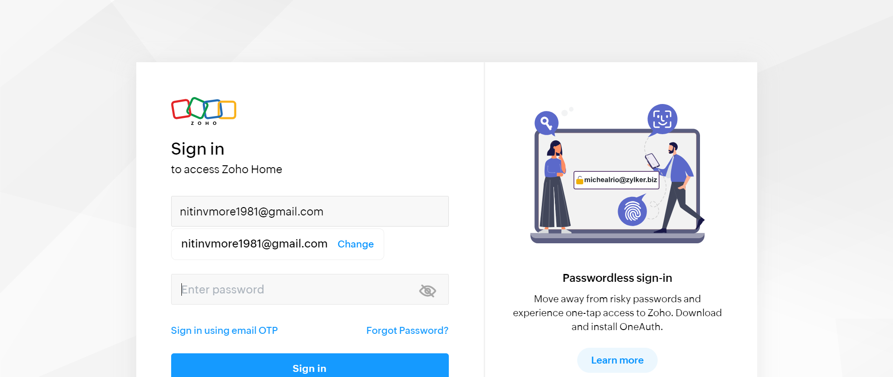And User enter password "Nitin@2020"stepDefinitions.Hooks.takeScreenshot(io.cucumber.java.Scenario)image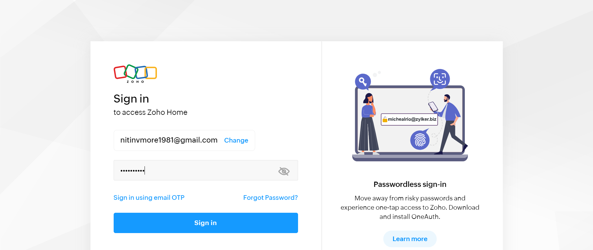And User click on Sign instepDefinitions.Hooks.takeScreenshot(io.cucumber.java.Scenario)image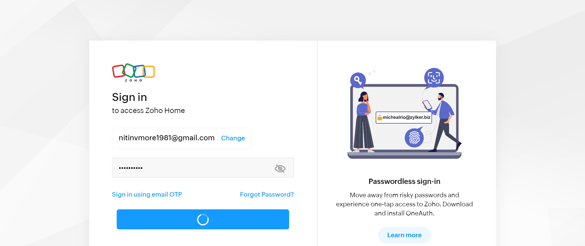Then User on Home PagestepDefinitions.Hooks.takeScreenshot(io.cucumber.java.Scenario)image
And User click on NextstepDefinitions.Hooks.takeScreenshot(io.cucumber.java.Scenario)image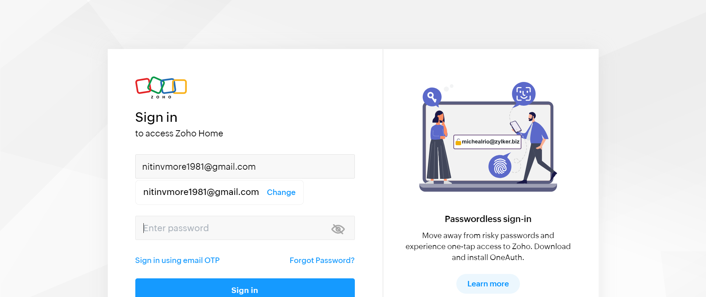And User enter password "Nitin@2020"stepDefinitions.Hooks.takeScreenshot(io.cucumber.java.Scenario)image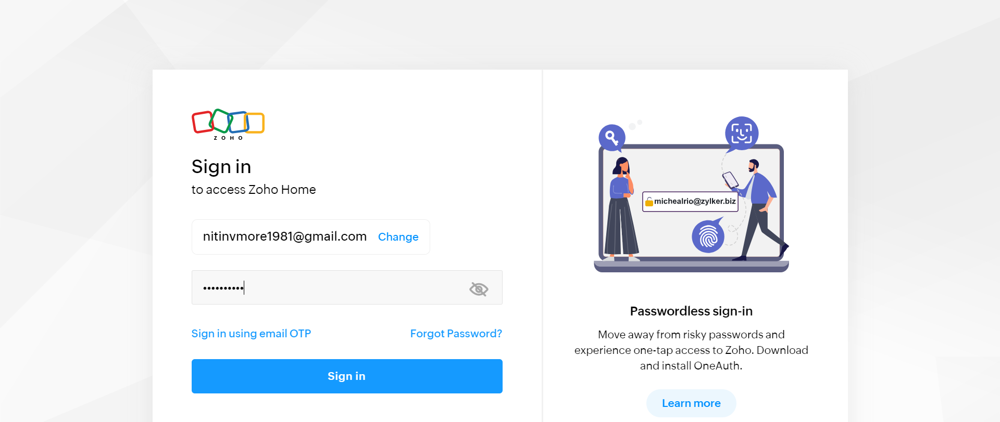And User click on Sign instepDefinitions.Hooks.takeScreenshot(io.cucumber.java.Scenario)image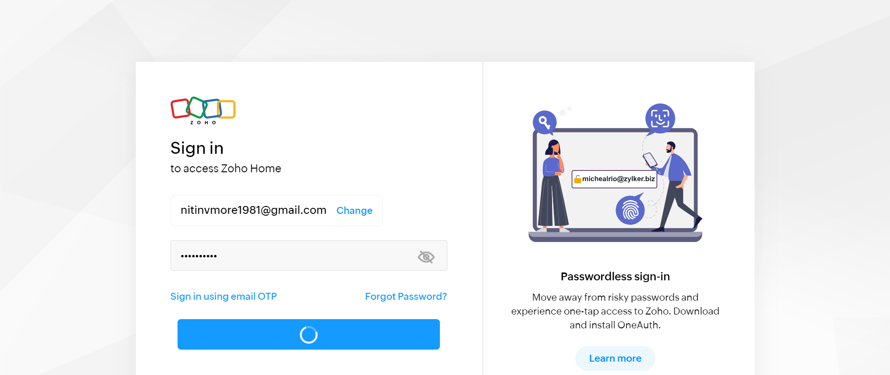Then User on Home PagestepDefinitions.Hooks.takeScreenshot(io.cucumber.java.Scenario)image
-
Create a campaign
2:40:27 pm / 00:00:15:786 Fail
Create a campaign
09.03.2024 2:40:27 pm 09.03.2024 2:40:43 pm 00:00:15:786 · #test-id=13FailValidate PO Generation and Receipt CreationFailValidate PO Generation and Receipt CreationGiven User launches Epro url and login with valid Staginguser_2 and Password@123456stepDefinitions.DemoQATextBoxStepDefinition.addScreenshot(io.cucumber.java.Scenario)And On Campaign Item Page verify Status as Quote Accepted and User will Send and the create POStep skippedThen Verify Status as PO Created after creating the PO on Campaign Item PageStep skippedAnd User will navigate to Finance page to create receiptStep skippedThen User will upload POD documentStep skippedAnd Verify Has POD column status with green tickStep skippedAnd User navigate to the Receipt Tab and click on required CheckboxStep skippedThen Verify Receipted column status with green tickStep skippedstepDefinitions.Hooks.teardown() -
Logon to amazon
2:40:27 pm / 00:00:07:818 Fail
Logon to amazon
09.03.2024 2:40:27 pm 09.03.2024 2:40:35 pm 00:00:07:818 · #test-id=22FailLogon AmazonGiven User launches "https://www.amazon.com/"Step undefinedstepDefinitions.Hooks.takeScreenshot(io.cucumber.java.Scenario)image When username and password are entered
When username and password are enteredUserName Password test@email.com RandomPassword Step skippedAnd user clicks on submit buttonStep skippedThen user should get logged inStep skipped -
Functionality of Text Box
2:40:50 pm / 00:00:09:432 Fail
Functionality of Text Box
09.03.2024 2:40:50 pm 09.03.2024 2:41:00 pm 00:00:09:432 · #test-id=188FailEntering the values in Text Box FieldFailEntering the values in Text Box FieldGiven User enter and Launches website "https://demoqa.com/"stepDefinitions.Hooks.takeScreenshot(io.cucumber.java.Scenario)imageWhen User click on elementstepDefinitions.Hooks.takeScreenshot(io.cucumber.java.Scenario)image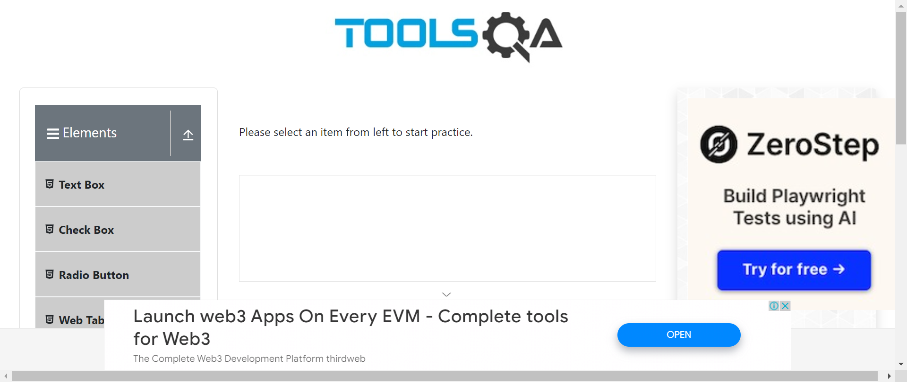stepDefinitions.DemoQATextBoxStepDefinition.addScreenshot(io.cucumber.java.Scenario)When User click on Text BoxStep skippedAnd User enter the name name1Step skippedAnd User enter the mail name1@gmail.comStep skippedAnd User enter the current address successStep skippedAnd User enter the Permanent address successStep skippedAnd User click on submitStep skippedThen User will visible enter detailsStep skippedstepDefinitions.Hooks.teardown()FailEntering the values in Text Box FieldGiven User enter and Launches website "https://demoqa.com/"stepDefinitions.Hooks.takeScreenshot(io.cucumber.java.Scenario)imageWhen User click on elementstepDefinitions.Hooks.takeScreenshot(io.cucumber.java.Scenario)image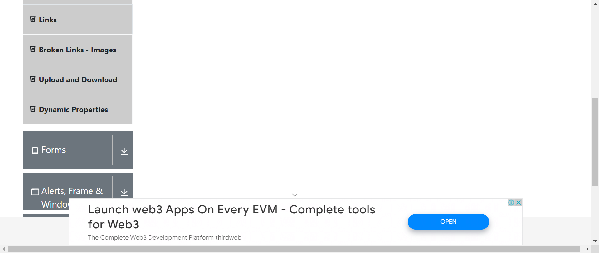When User click on Text BoxstepDefinitions.Hooks.takeScreenshot(io.cucumber.java.Scenario)image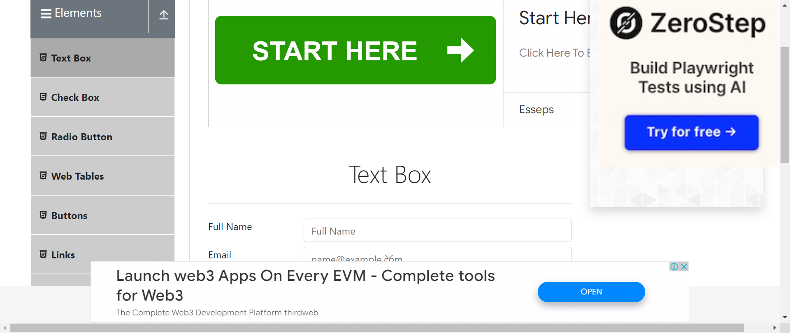And User enter the name name2stepDefinitions.Hooks.takeScreenshot(io.cucumber.java.Scenario)imageAnd User enter the mail name2@gmail.comstepDefinitions.DemoQATextBoxStepDefinition.addScreenshot(io.cucumber.java.Scenario)And User enter the current address failStep skippedAnd User enter the Permanent address failStep skippedAnd User click on submitStep skippedThen User will visible enter detailsStep skippedstepDefinitions.Hooks.teardown() -
Create a campaign
2:40:50 pm / 00:00:11:966 Fail
Create a campaign
09.03.2024 2:40:50 pm 09.03.2024 2:41:02 pm 00:00:11:966 · #test-id=194FailValidate Create Campaign and Assign SupplierFailValidate Create Campaign and Assign SupplierGiven User launches Epro url and login with valid Staginguser_2 and Password@123456stepDefinitions.DemoQATextBoxStepDefinition.addScreenshot(io.cucumber.java.Scenario)And user navigate to Campaign page and create campaignStep skippedAnd User add new Item in the Campaign using Create New Item buttonStep skippedThen Verify Campaign status as CreatedStep skippedAnd Click on Submit for Costing buttonStep skippedAnd User will add Supplier Cost using Submit supplier buttonStep skippedAnd User will manage the supplier price and add all required detailsStep skippedAnd User will navigate to Quote Managment tab and generate quoteStep skippedAnd User will accept the quote on clicking of Quote Accepted buttonStep skippedThen Verify status as Quote Accepted on Campaign Item PageStep skippedstepDefinitions.Hooks.teardown() -
Create a campaign
2:40:50 pm / 00:00:11:724 Fail
Create a campaign
09.03.2024 2:40:50 pm 09.03.2024 2:41:02 pm 00:00:11:724 · #test-id=198FailValidate Draft and Final Invoice GenerationFailValidate Draft and Final Invoice GenerationGiven User launches Epro url and login with valid Staginguser_2 and Password@123456stepDefinitions.Hooks.takeScreenshot(io.cucumber.java.Scenario)imageAnd User get the Campaign id for PO Receipted and navigate to Sales Order pagestepDefinitions.DemoQATextBoxStepDefinition.addScreenshot(io.cucumber.java.Scenario)Then User will Create Draft InvoiceStep skippedAnd Click on Finance and navigate to Sales InvoiceStep skippedAnd Click on resepctive Invoice number (Manage Invoice)Step skippedThen User will send Final Invoice to customerStep skippedstepDefinitions.Hooks.teardown() -
Create a campaign
2:40:50 pm / 00:00:10:272 Fail
Create a campaign
09.03.2024 2:40:50 pm 09.03.2024 2:41:00 pm 00:00:10:272 · #test-id=202FailValidate PO Generation and Receipt CreationFailValidate PO Generation and Receipt CreationGiven User launches Epro url and login with valid Staginguser_2 and Password@123456stepDefinitions.DemoQATextBoxStepDefinition.addScreenshot(io.cucumber.java.Scenario)And On Campaign Item Page verify Status as Quote Accepted and User will Send and the create POStep skippedThen Verify Status as PO Created after creating the PO on Campaign Item PageStep skippedAnd User will navigate to Finance page to create receiptStep skippedThen User will upload POD documentStep skippedAnd Verify Has POD column status with green tickStep skippedAnd User navigate to the Receipt Tab and click on required CheckboxStep skippedThen Verify Receipted column status with green tickStep skippedstepDefinitions.Hooks.teardown() -
Logon to amazon
2:40:50 pm / 00:00:05:367 Fail
Logon to amazon
09.03.2024 2:40:50 pm 09.03.2024 2:40:56 pm 00:00:05:367 · #test-id=206FailLogon AmazonGiven User launches "https://www.amazon.com/"Step undefinedstepDefinitions.Hooks.takeScreenshot(io.cucumber.java.Scenario)image When username and password are entered
When username and password are enteredUserName Password test@email.com RandomPassword Step skippedAnd user clicks on submit buttonStep skippedThen user should get logged inStep skipped
-
@Scenario2
2 tests
@Scenario2
2 failedStatus Timestamp TestName Fail 14:40:27 pm Validate PO Generation and Receipt Creation Create a campaign.Validate PO Generation and Receipt CreationFail 14:40:50 pm Validate PO Generation and Receipt Creation Create a campaign.Validate PO Generation and Receipt Creation -
@TextBox
4 tests
@TextBox
4 failedStatus Timestamp TestName Fail 14:40:27 pm Entering the values in Text Box Field Functionality of Text Box.Entering the values in Text Box FieldFail 14:40:27 pm Entering the values in Text Box Field Functionality of Text Box.Entering the values in Text Box FieldFail 14:40:50 pm Entering the values in Text Box Field Functionality of Text Box.Entering the values in Text Box FieldFail 14:40:50 pm Entering the values in Text Box Field Functionality of Text Box.Entering the values in Text Box Field -
@Zoho
1 tests
@Zoho
1 passedStatus Timestamp TestName Pass 14:40:27 pm Sign on Zoho Sign In.Sign on Zoho -
@Amazon
2 tests
@Amazon
2 failedStatus Timestamp TestName Fail 14:40:27 pm Logon Amazon Logon to amazon.Logon AmazonFail 14:40:50 pm Logon Amazon Logon to amazon.Logon Amazon -
@Scenario3
2 tests
@Scenario3
2 failedStatus Timestamp TestName Fail 14:40:27 pm Validate Draft and Final Invoice Generation Create a campaign.Validate Draft and Final Invoice GenerationFail 14:40:50 pm Validate Draft and Final Invoice Generation Create a campaign.Validate Draft and Final Invoice Generation -
@EproCampaignCreation
6 tests
@EproCampaignCreation
6 failedStatus Timestamp TestName Fail 14:40:27 pm Validate Draft and Final Invoice Generation Create a campaign.Validate Draft and Final Invoice GenerationFail 14:40:27 pm Validate Create Campaign and Assign Supplier Create a campaign.Validate Create Campaign and Assign SupplierFail 14:40:27 pm Validate PO Generation and Receipt Creation Create a campaign.Validate PO Generation and Receipt CreationFail 14:40:50 pm Validate Create Campaign and Assign Supplier Create a campaign.Validate Create Campaign and Assign SupplierFail 14:40:50 pm Validate Draft and Final Invoice Generation Create a campaign.Validate Draft and Final Invoice GenerationFail 14:40:50 pm Validate PO Generation and Receipt Creation Create a campaign.Validate PO Generation and Receipt Creation -
@Scenario1
2 tests
@Scenario1
2 failedStatus Timestamp TestName Fail 14:40:27 pm Validate Create Campaign and Assign Supplier Create a campaign.Validate Create Campaign and Assign SupplierFail 14:40:50 pm Validate Create Campaign and Assign Supplier Create a campaign.Validate Create Campaign and Assign Supplier -
@Scenario11
2 tests
@Scenario11
2 failedStatus Timestamp TestName Fail 14:40:27 pm Logon Amazon Logon to amazon.Logon AmazonFail 14:40:50 pm Logon Amazon Logon to amazon.Logon Amazon
-
java.lang.RuntimeException
1 tests
java.lang.RuntimeException
1 failedStatus Timestamp TestName Fail 14:40:59 pm stepDefinitions.DemoQATextBoxStepDefinition.addScreenshot(io.cucumber.java.Scenario) Functionality of Text Box.Entering the values in Text Box Field.stepDefinitions.DemoQATextBoxStepDefinition.addScreenshot(io.cucumber.java.Scenario) -
org.openqa.selenium.remote.UnreachableBrowserException
6 tests
org.openqa.selenium.remote.UnreachableBrowserException
6 failedStatus Timestamp TestName Fail 14:40:40 pm And User get the Campaign id for PO Receipted and navigate to Sales Order page Create a campaign.Validate Draft and Final Invoice Generation.And User get the Campaign id for PO Receipted and navigate to Sales Order pageFail 14:40:43 pm stepDefinitions.DemoQATextBoxStepDefinition.addScreenshot(io.cucumber.java.Scenario) Create a campaign.Validate Draft and Final Invoice Generation.stepDefinitions.DemoQATextBoxStepDefinition.addScreenshot(io.cucumber.java.Scenario)Fail 14:40:43 pm stepDefinitions.Hooks.teardown() Create a campaign.Validate Draft and Final Invoice Generation.stepDefinitions.Hooks.teardown()Fail 14:40:53 pm Given User launches Epro url and login with valid Staginguser_2 and Password@123456 Create a campaign.Validate Create Campaign and Assign Supplier.Given User launches Epro url and login with valid Staginguser_2 and Password@123456Fail 14:41:02 pm stepDefinitions.DemoQATextBoxStepDefinition.addScreenshot(io.cucumber.java.Scenario) Create a campaign.Validate Create Campaign and Assign Supplier.stepDefinitions.DemoQATextBoxStepDefinition.addScreenshot(io.cucumber.java.Scenario)Fail 14:41:02 pm stepDefinitions.Hooks.teardown() Create a campaign.Validate Create Campaign and Assign Supplier.stepDefinitions.Hooks.teardown() -
org.openqa.selenium.WebDriverException
7 tests
org.openqa.selenium.WebDriverException
7 failedStatus Timestamp TestName Fail 14:40:41 pm stepDefinitions.Hooks.teardown() Functionality of Text Box.Entering the values in Text Box Field.stepDefinitions.Hooks.teardown()Fail 14:40:43 pm stepDefinitions.Hooks.teardown() Create a campaign.Validate PO Generation and Receipt Creation.stepDefinitions.Hooks.teardown()Fail 14:40:44 pm stepDefinitions.Hooks.teardown() Create a campaign.Validate Create Campaign and Assign Supplier.stepDefinitions.Hooks.teardown()Fail 14:41:00 pm stepDefinitions.Hooks.teardown() Create a campaign.Validate PO Generation and Receipt Creation.stepDefinitions.Hooks.teardown()Fail 14:41:01 pm And User get the Campaign id for PO Receipted and navigate to Sales Order page Create a campaign.Validate Draft and Final Invoice Generation.And User get the Campaign id for PO Receipted and navigate to Sales Order pageFail 14:41:02 pm stepDefinitions.DemoQATextBoxStepDefinition.addScreenshot(io.cucumber.java.Scenario) Create a campaign.Validate Draft and Final Invoice Generation.stepDefinitions.DemoQATextBoxStepDefinition.addScreenshot(io.cucumber.java.Scenario)Fail 14:41:02 pm stepDefinitions.Hooks.teardown() Create a campaign.Validate Draft and Final Invoice Generation.stepDefinitions.Hooks.teardown() -
org.openqa.selenium.NoSuchWindowException
13 tests
org.openqa.selenium.NoSuchWindowException
13 failedStatus Timestamp TestName Fail 14:40:41 pm stepDefinitions.DemoQATextBoxStepDefinition.addScreenshot(io.cucumber.java.Scenario) Functionality of Text Box.Entering the values in Text Box Field.stepDefinitions.DemoQATextBoxStepDefinition.addScreenshot(io.cucumber.java.Scenario)Fail 14:40:42 pm stepDefinitions.DemoQATextBoxStepDefinition.addScreenshot(io.cucumber.java.Scenario) Functionality of Text Box.Entering the values in Text Box Field.stepDefinitions.DemoQATextBoxStepDefinition.addScreenshot(io.cucumber.java.Scenario)Fail 14:40:42 pm stepDefinitions.Hooks.teardown() Functionality of Text Box.Entering the values in Text Box Field.stepDefinitions.Hooks.teardown()Fail 14:40:31 pm Given User launches Epro url and login with valid Staginguser_2 and Password@123456 Create a campaign.Validate PO Generation and Receipt Creation.Given User launches Epro url and login with valid Staginguser_2 and Password@123456Fail 14:40:43 pm stepDefinitions.DemoQATextBoxStepDefinition.addScreenshot(io.cucumber.java.Scenario) Create a campaign.Validate PO Generation and Receipt Creation.stepDefinitions.DemoQATextBoxStepDefinition.addScreenshot(io.cucumber.java.Scenario)Fail 14:40:31 pm Given User launches Epro url and login with valid Staginguser_2 and Password@123456 Create a campaign.Validate Create Campaign and Assign Supplier.Given User launches Epro url and login with valid Staginguser_2 and Password@123456Fail 14:40:44 pm stepDefinitions.DemoQATextBoxStepDefinition.addScreenshot(io.cucumber.java.Scenario) Create a campaign.Validate Create Campaign and Assign Supplier.stepDefinitions.DemoQATextBoxStepDefinition.addScreenshot(io.cucumber.java.Scenario)Fail 14:40:59 pm And User enter the mail name2@gmail.com Functionality of Text Box.Entering the values in Text Box Field.And User enter the mail name2@gmail.comFail 14:40:59 pm stepDefinitions.DemoQATextBoxStepDefinition.addScreenshot(io.cucumber.java.Scenario) Functionality of Text Box.Entering the values in Text Box Field.stepDefinitions.DemoQATextBoxStepDefinition.addScreenshot(io.cucumber.java.Scenario)Fail 14:40:59 pm stepDefinitions.Hooks.teardown() Functionality of Text Box.Entering the values in Text Box Field.stepDefinitions.Hooks.teardown()Fail 14:41:00 pm stepDefinitions.Hooks.teardown() Functionality of Text Box.Entering the values in Text Box Field.stepDefinitions.Hooks.teardown()Fail 14:40:54 pm Given User launches Epro url and login with valid Staginguser_2 and Password@123456 Create a campaign.Validate PO Generation and Receipt Creation.Given User launches Epro url and login with valid Staginguser_2 and Password@123456Fail 14:41:00 pm stepDefinitions.DemoQATextBoxStepDefinition.addScreenshot(io.cucumber.java.Scenario) Create a campaign.Validate PO Generation and Receipt Creation.stepDefinitions.DemoQATextBoxStepDefinition.addScreenshot(io.cucumber.java.Scenario) -
org.openqa.selenium.NoSuchElementException
1 tests
org.openqa.selenium.NoSuchElementException
1 failedStatus Timestamp TestName Fail 14:40:42 pm And User click on submit Functionality of Text Box.Entering the values in Text Box Field.And User click on submit